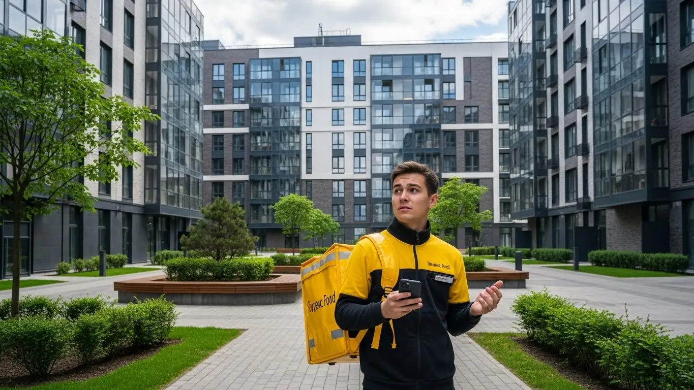

Работа курьером Яндекс Еды в Саранске: доход, условия 2025-2026

- Работа курьером Яндекс Еды в Саранске: для кого эта вакансия и что вы получите
- Сколько вы будете зарабатывать курьером в Саранске: калькулятор дохода и разбор выплат
- Реальный заработок курьера в Саранске: смены и месячный доход
- Требования к кандидату и документы
- Самозанятость, налоги и юридическая чистота
- Пошаговое оформление и первый выход на линию в Саранске
- Пешком, на вело или на авто: что выгоднее в Саранске
- Районы, маршруты и «топовые» зоны заказов в Саранске
- Безопасность, страховка, штрафы и оплата простоя
- Плюсы и возможные минусы работы курьером в Саранске
- Реальные истории и отзывы курьеров из Саранске
- Короткие ответы на главные вопросы
- Итоги и ваш следующий шаг
Все города
Думаешь, работа курьером Яндекс Еды в Саранске – это легко и просто? Или, может, боишься, что будешь пахать за копейки, убьёшь свой велик или машину на наших дорогах, да ещё и в пробках на Коммунистической или в районе ТЦ «Сити-Парк» застрянешь? Забудь про общие рекламные тексты. Я, Алексей, уже не первый год в этой теме, и сейчас расскажу тебе всю подноготную работы курьером Яндекс Еды именно в Саранске, без прикрас и лишней воды.
Поверь моему опыту, без понимания внутренней кухни работы курьером Яндекс ты рискуешь разочароваться уже в первый месяц. Многие новички в Саранске наступают на одни и те же грабли. Важно знать, как расходы на бензин или проезд, налоги, система рейтинга и приоритета влияют на твой реальный заработок. А ещё – где в Саранске «рыбные» районы, а где лучше не соваться, чтобы не катать вхолостую. Незнание местной специфики – это прямая потеря времени и денег. Если ты готов узнать больше о вакансиях, условиях и подать заявку на работу курьером Яндекс Еда в Саранске, переходи по ссылке: работа курьером Яндекс Еда в Саранске. Там ты найдешь подробный FAQ, актуальный калькулятор дохода и удобную форму для быстрой регистрации.
Я не просто разложу по полочкам, а покажу на примерах, как устроена курьерская работа в Яндекс Еде в Саранске в 2025-2026 году. Мы выясним, какой формат (пеший, вело, авто) выгоднее именно для Саранска, посчитаем реальный доход, разберём «рыбные» места и часы пик. Расскажу, как погода и сезоны влияют на заказы, какие штрафы бывают и как их избежать, а также сравним Яндекс Еду с конкурентами в нашем городе. И, конечно, поделюсь отзывами местных курьеров.
Так что, если ты готов узнать правду без прикрас и получить реальные советы от человека, который сам прошел через все эти доставки в Саранске, то давай по порядку. Я, Алексей, владелец небольшого таксопарка и бывший курьер, знаю эту работу изнутри. Всё разложу по полочкам, чтобы ты мог начать зарабатывать эффективно и без лишних проблем.

Прежде чем мы углубимся в детали, предлагаю тебе ознакомиться с кратким навигатором по ключевым темам статьи.
Что ты точно узнаешь из этого разбора о работе курьером в Саранске
В этой статье ты ТОЧНО узнаешь:
- Сколько реально можно заработать курьером в Саранске за смену и месяц, и от чего зависит твой доход?
- Какой формат доставки (пеший, вело, авто) будет самым выгодным именно для Саранска и твоих районов?
- Где в Саранске больше всего заказов и как выбирать слоты, чтобы не мотаться впустую?
- Как оформить самозанятость за 10 минут и сколько налогов платить, чтобы работать легально?
- Как избежать штрафов, что такое оплата простоя и защищает ли тебя страховка на сменах?
- Можно ли начать работать без опыта, и какие есть возрастные ограничения в Яндекс Еде?
А если тебе некогда читать всю статью — переходи сразу к заключению, где ты найдёшь короткие ответы на все эти вопросы и указания, в каких разделах искать подробности.
А теперь взгляни на общую картину в удобной инфографике, которая покажет основные моменты работы курьером.
Ключевые цифры по работе курьером Яндекс Еды в Саранске
Работа курьером Яндекс Еды в Саранске: для кого эта вакансия и что вы получите
Кому подойдёт эта работа в Саранске
Курьерская работа в Яндекс Еде в Саранске — это отличный вариант для тех, кто ищет гибкий график и возможность быстро начать зарабатывать. Эта вакансия идеально подходит студентам МГУ им. Н.П. Огарёва, которым нужна подработка после пар или на выходных. Также она станет хорошим решением для людей без опыта, желающих освоить новую сферу. Здесь не требуется специального образования или длительного обучения, главное — желание работать и ответственность.
Кроме того, стать курьером Яндекс Еды в Саранске — это хороший выбор для водителей, которые хотят использовать свой автомобиль для дополнительного дохода, или для тех, кому важны ежедневные выплаты и свободный график. Такой формат позволяет легко совмещать доставку с основной работой или личными делами. Ты сам выбираешь, когда и сколько работать, что особенно ценно в современном ритме жизни.
Главные преимущества для жителей районов Юго-Запад, Химмаш, Центр
Одно из ключевых преимуществ работы курьером в Саранске — это возможность работать рядом с домом, что значительно экономит время и силы на дорогу. Например, если ты живешь в районе Юго-Запад, то можешь брать заказы прямо там, не тратя часы на поездки через весь город. Это касается и жителей Химмаша или Центра — в каждом из этих районов достаточно ресторанов, кафе и магазинов, генерирующих стабильный поток заказов для доставщиков Яндекс Еды.
Работая в своём районе, ты лучше знаешь местность, короткие пути и особенности трафика, что позволяет выполнять заказы быстрее и эффективнее. Это не только увеличивает твой заработок, но и делает работу более комфортной. Ты не привязан к конкретной точке и можешь выходить на смены там, где тебе удобно, используя приложение Яндекс Про для выбора зон доставки.
Краткое обещание по доходу и условиям
В Саранске курьеры Яндекс Еды могут рассчитывать на вполне достойный доход. При полной занятости, работая 8-10 часов в день, можно зарабатывать от 60 000 до 90 000 рублей в месяц. При частичной подработке в 3-4 часа в день твой заработок составит от 15 000 до 30 000 рублей. Важно, что выплаты производятся ежедневно, что позволяет тебе всегда иметь деньги на карте.
Условия работы максимально прозрачны и гибки: ты сам формируешь свой график, выбираешь удобные слоты и зоны доставки через приложение Яндекс Про. Опыт работы не требуется, а все необходимые знания ты получишь на коротком онлайн-обучении. Это отличный шанс начать получать доход без лишних сложностей и бюрократии.
Кейс из практики:
Мой знакомый, студент МГУ им. Н.П. Огарёва, по имени Игорь, живет в районе Центр. Он выходит на смены по вечерам, после учебы, примерно на 3-4 часа. За это время, работая пешим курьером Яндекс Еды, он успевает выполнить 7-10 заказов, в основном из кафе и ресторанов в центре города. В среднем, за такой вечер Игорь получает около 1200-1800 рублей, а за неделю его доход выходит до 8000-10000 рублей, что отлично помогает ему покрывать личные расходы и не зависеть от родителей.
Вывод по разделу:
Работа курьером Яндекс Еды в Саранске — это доступная и гибкая вакансия, которая подойдёт широкому кругу людей: от студентов до водителей, ищущих подработку. Главные преимущества — возможность работать рядом с домом, ежедневные выплаты и отсутствие требований к опыту. Чтобы максимизировать свой доход, выбирай слоты в своём районе через Яндекс Про и старайся работать в часы пик.
Сколько вы будете зарабатывать курьером в Саранске: калькулятор дохода и разбор выплат
Из чего складывается доход курьера
Твой доход как курьера Яндекс Еды в Саранске формируется из нескольких ключевых составляющих. Во-первых, это базовая оплата за каждый выполненный заказ, которая зависит от его сложности и веса. Во-вторых, ты получаешь доплату за расстояние, пройденное от ресторана до клиента, что особенно актуально для дальних доставок по городу или в пригороды, например, в Рузаевку. Кроме того, в часы повышенного спроса (например, в обеденное или вечернее время, а также в плохую погоду) действуют повышающие коэффициенты, которые значительно увеличивают стоимость заказа.
Помимо этого, ты можешь рассчитывать на различные бонусы от сервиса за выполнение определённого количества заказов или работу в определённых зонах. Не стоит забывать и про чаевые от клиентов, которые часто оставляют благодарные пользователи. Важные преимущества, которые отличают работу в Яндекс Еде, — это оплата простоя, когда ты находишься на смене, но заказов временно нет, и возможная компенсация проезда, если маршрут был особенно длинным или требовал использования общественного транспорта.
Как пользоваться калькулятором дохода
Чтобы примерно прикинуть свой потенциальный заработок, можно воспользоваться специальным калькулятором дохода. Это простой инструмент: сначала тебе нужно выбрать тип доставки, который тебе подходит — пеший курьер, велокурьер или автокурьер. Затем указываешь, сколько часов в день ты планируешь работать и сколько дней в неделю готов выходить на линию.

После ввода этих данных калькулятор покажет тебе примерный дневной и месячный доход, который ты сможешь получать как курьер в Саранске. Конечно, это ориентировочные цифры, ведь реальный заработок зависит от многих факторов, таких как количество заказов, повышающие коэффициенты, которые видны в приложении Яндекс Про, и твоя эффективность. Но калькулятор даёт хорошее представление о потенциале заработка.
Рассчитай свой примерный доход курьера в Саранске
8 часов в день
5 дней в неделю
(расчет основан на усредненной ставке 400 ₽/час для Саранска)
Расчёт примерный и не учитывает бонусы, повышающие коэффициенты, возможные простои и тип транспорта. Реальный заработок зависит от многих факторов.
Хочешь узнать больше о вакансиях, условиях и подать заявку? Переходи по ссылке: работа курьером Яндекс Еда в твоём городе. Там ты найдешь подробный FAQ, актуальный калькулятор дохода и удобную форму для быстрой регистрации.
Примеры расчёта для пешего, вело- и авто‑курьера в Саранске
Давай рассмотрим несколько реальных сценариев для Саранска, чтобы ты понимал, на что можно рассчитывать, работая курьером.
Сценарий 1: Пеший курьер в Центре.
Представь, что ты работаешь пешим курьером в самом сердце Саранска, например, вокруг Советской площади и по улице Большевистской, в обеденный пик с 12:00 до 15:00. За эти 3 часа, выполняя короткие заказы из многочисленных кафе и ресторанов, ты можешь заработать от 900 до 1500 рублей. Если работать так 5 дней в неделю, то за месяц твой доход выйдет около 18 000 – 30 000 рублей.
Сценарий 2: Велокурьер между спальными районами.
Если ты предпочитаешь велосипед, то можешь эффективно работать велокурьером Яндекс между районами Юго-Запад и Химмаш, где много жилых домов и точек общепита. Выходя на смену на 6 часов, например, с 16:00 до 22:00, ты сможешь выполнить 12-18 заказов. Твой доход за такую смену составит примерно 2000-3000 рублей, а за месяц при 5-дневной рабочей неделе — до 40 000 – 60 000 рублей.
Сценарий 3: Водитель-курьер по всему городу и пригороду.
На автомобиле ты можешь охватывать весь Саранск, включая отдаленные районы, и даже брать заказы в соседнюю Рузаевку. Работая полную смену в 8-10 часов, особенно в выходные или в плохую погоду, когда повышаются коэффициенты, ты можешь заработать 3500-5000 рублей за день. При активной работе 5-6 дней в неделю, месячный доход автокурьера может достигать 70 000 – 100 000 рублей.
Сравнение потенциального дохода по типам курьеров в Саранске
| Параметр | Пеший курьер | Велокурьер | Автокурьер |
|---|---|---|---|
| Средний доход за час | 300-500 ₽ | 350-600 ₽ | 450-700 ₽ |
| Потенциальный доход за смену (8 ч) | 2400-4000 ₽ | 2800-4800 ₽ | 3600-5600 ₽ |
| Потенциальный доход за месяц (22 смены) | 52 800-88 000 ₽ | 61 600-105 600 ₽ | 79 200-123 200 ₽ |
| Оптимальные зоны в Саранске | Центр, плотная застройка | Юго-Запад, Химмаш, Светотехстрой | Весь город, Рузаевка |
| Требования к транспорту | Только ноги | Велосипед (свой) | Автомобиль (свой) |
Кейс из практики:
Возьмем Сергея, автокурьера Яндекс из Саранска. Он обычно выходит на линию в пятницу вечером и работает до поздней ночи, а потом еще и в субботу полный день. В эти пиковые часы, особенно когда на улице плохая погода, заказов много, и коэффициенты высокие. За одну такую пятничную смену в 6-7 часов он легко получает доход в 3000-4000 рублей, а за субботу, работая 10-12 часов, его заработок может доходить до 6000-7000 рублей. За выходные он стабильно делает больше 10 000 рублей, что является отличным дополнением к его основному заработку.
Вывод по разделу:
Заработок курьера Яндекс в Саранске складывается из оплаты за заказы, расстояния, бонусов, чаевых и важных доплат за простой. Калькулятор поможет тебе прикинуть потенциальный доход, а реальные примеры показывают, что при грамотном подходе можно получать от 50 000 до 100 000 рублей в месяц в зависимости от типа транспорта и занятости. Чтобы зарабатывать больше, выбирай пиковые часы и используй повышающие коэффициенты, доступные в приложении Яндекс Про.
Реальный заработок курьера в Саранске: смены и месячный доход
Давай поговорим о самом главном: сколько реально зарабатывает курьер в Яндексе, если ты выбираешь доставку в Саранске. Это не столица, поэтому цифры будут свои, но вполне достойные, если подойти к делу с умом. Твой доход будет зависеть от многих факторов: сколько часов ты готов уделять работе, на чём доставляешь заказы, и даже от того, какая погода за окном.
Я сам через это прошёл и могу сказать, что курьерская работа — это не только про доставку, но и про умение планировать, выбирать выгодные слоты и зоны. В Саранске есть свои особенности, которые нужно учитывать, чтобы получать максимальный заработок. Главное — не лениться и использовать все возможности, которые даёт приложение «Яндекс Про».
Диапазон дохода для подработки и полной занятости
Если ты рассматриваешь курьерскую работу как подработку в Саранске, например, 2–4 часа в день, то пеший курьер может рассчитывать на 250–400 рублей в час. Это значит, что за вечернюю смену в 3 часа ты можешь заработать от 750 до 1200 рублей. Велокурьер, благодаря большей мобильности, часто выходит на 300–500 рублей в час, что за те же 3 часа даёт от 900 до 1500 рублей. Автокурьер, конечно, зарабатывает больше за счёт дальних и крупных доставок — от 400 до 700 рублей в час, то есть от 1200 до 2100 рублей за короткую смену.
При полной занятости, когда ты работаешь 8–10 часов в день, цифры становятся куда интереснее. Пеший курьер в Саранске, активно работая в центре города или в плотных жилых районах вроде Юго-Запада, может получать от 45 000 до 70 000 рублей в месяц. Велокурьеры, которые быстро перемещаются между Пролетарским и Октябрьским районами, часто выходят на доход от 55 000 до 90 000 рублей. А вот водитель-курьер, охватывающий весь город и даже пригороды, при полной загрузке может зарабатывать от 75 000 до 120 000 рублей и выше. Таким образом, сколько зарабатывает курьер Яндекс, зависит от твоего выбора формата работы и транспорта.
| Тип курьера | Средний доход в час (Саранск) | Доход за подработку (2-4 ч/день) | Доход за полную занятость (8-10 ч/день) | Преимущества в Саранске | Особенности/Минусы |
|---|---|---|---|---|---|
| Пеший курьер | 250–400 ₽ | 750–1600 ₽ | 45 000–70 000 ₽ | Идеален для центра, Советской площади, ТРЦ «Сити-Парк». Не нужны вложения. | Ограниченная зона, физическая нагрузка, зависимость от погоды. |
| Велокурьер | 300–500 ₽ | 900–2000 ₽ | 55 000–90 000 ₽ | Быстрота в спальных районах (Юго-Запад, Химмаш), объезд пробок. | Нужен велосипед, физическая нагрузка, зависимость от погоды. |
| Автокурьер | 400–700 ₽ | 1200–2800 ₽ | 75 000–120 000 ₽ | Доставка по всему городу, крупные заказы, комфорт в плохую погоду. | Расходы на бензин и обслуживание авто, пробки в часы пик. |
Кейс из практики: Мой знакомый, студент из Саранска, успешно работает пешим курьером по вечерам после пар. Он выбирает выгодные слоты в районе Проспекта Ленина и ТРЦ «Макс», где сосредоточено много кафе и ресторанов. За 4 часа, с 18:00 до 22:00, он стабильно выполняет 4-6 заказов и зарабатывает около 1500 рублей. В выходные, если выходит на 8 часов, его доход достигает 3000-3500 рублей. Такая подработка позволяет ему покрывать расходы на учёбу и личные нужды, не отвлекаясь от основной деятельности.
Вывод: Реальный заработок курьера в Саранске напрямую зависит от твоей активности и выбранного типа доставки. Чем больше ты работаешь и чем эффективнее используешь возможности приложения «Яндекс Про», тем выше будет твой доход. Чтобы максимизировать прибыль, старайся брать слоты в часы пик и не бойся экспериментировать с районами. Курьерская работа в Яндексе может стать отличным источником дохода при правильном подходе.
Как район, время суток и погода влияют на доход
Заработок курьера в Саранске очень сильно зависит от нескольких факторов, которые нужно учитывать, чтобы получать больше.
Во-первых, это район. В центре города, особенно вокруг Советской площади, Проспекта Ленина и крупных торговых центров вроде ТРЦ «Сити-Парк», всегда много заказов из ресторанов и кафе. Здесь пешие и велокурьеры могут работать очень эффективно, ведь расстояния небольшие, а спрос стабильный. В спальных районах, таких как Юго-Запад или Химмаш, больше заказов из продуктовых магазинов и доставок на дом через Яндекс Доставку, что особенно выгодно водителям-курьерам.
Во-вторых, время суток играет ключевую роль. Самые «рыбные» часы для курьерской работы — это обеденное время (с 12:00 до 14:00) и вечерний пик (с 18:00 до 22:00), особенно в выходные дни. В это время спрос на доставку еды и товаров резко возрастает, и Яндекс начинает применять повышающие коэффициенты. Это значит, что за каждый заказ ты получаешь больше денег. Например, в пятницу вечером или в воскресенье днём, когда многие заказывают еду на дом через Яндекс Еду, коэффициенты могут быть в 1,5-2 раза выше обычных.
В-третьих, погода — это твой друг, если ты готов работать в любых условиях. Дождь, снегопад, сильный ветер или, наоборот, аномальная жара — всё это приводит к тому, что обычные люди предпочитают не выходить из дома, а заказывать доставку. Соответственно, количество заказов растёт, а число курьеров на линии может снижаться. В такие моменты Яндекс активно поднимает коэффициенты, чтобы мотивировать доставщиков выходить на линию. Кроме того, в плохую погоду клиенты чаще оставляют чаевые, ценя твой труд и оперативность.
Советы по увеличению заработка от опытных курьеров
Чтобы реально увеличить свой заработок курьером в Саранске без лишних переработок, нужно действовать умно. Мой главный совет: всегда бери слоты в пиковые часы. Это вечера будней (с 18:00 до 22:00) и выходные дни полностью. Именно в это время действуют максимальные повышающие коэффициенты, и ты можешь заработать за 3-4 часа столько же, сколько за 6-7 часов в обычное время. Это отличная возможность для подработки.
Выбирай зоны с умом. В приложении «Яндекс Про» всегда видно карту спроса. Если ты пеший или велокурьер, фокусируйся на центре Саранска, где много ресторанов и кафе, предлагающих доставку через Яндекс Еду, и плотная застройка. Для водителя-курьера выгоднее работать в зонах, где есть крупные ТРЦ (например, ТРЦ «Сити-Парк» или ТРЦ «Макс») или спальные районы с большим количеством жилых домов, откуда идут заказы на продукты. Не бойся перемещаться между районами, если видишь, что в соседней зоне спрос выше.
Опытные курьеры часто комбинируют разные типы доставки. Например, если у тебя есть велосипед, ты можешь начать день как велокурьер, быстро отрабатывая заказы в Пролетарском районе, а вечером, когда трафик становится плотнее, перейти на пешую доставку в центре. Водители-курьеры могут брать дальние заказы в пригороды, такие как Рузаевка или Лямбирь, когда коэффициенты особенно высоки, а в остальное время работать по городу. Главное — быть гибким и постоянно мониторить ситуацию в приложении «Яндекс Про», чтобы не упускать выгодные заказы и максимизировать свой доход. Такая курьерская работа позволяет тебе контролировать свой заработок.
Требования к кандидату и документы
Чтобы начать работать курьером Яндекс Еды в Саранске, тебе не потребуется особый опыт или специфические навыки. Главное — соответствовать базовым требованиям и подготовить необходимые документы. Это несложно, и далее мы подробно разберем все условия, чтобы ты был готов к старту.
Возраст, гражданство и базовые условия
Для работы в Яндекс Еде в Саранске, как и по всей стране, тебе должно быть не меньше 18 лет. Это одно из основных требований, которое распространяется на все форматы: пешего курьера, велокурьера и, конечно, водителя-курьера на своем авто. По гражданству также всё просто: подойдёт паспорт гражданина РФ или одной из стран ЕАЭС (Казахстан, Беларусь, Армения, Кыргызстан). Важно, чтобы твои документы были в порядке и не было проблем с миграционным учётом, если ты не гражданин России.
Помимо возраста и гражданства, существуют общие условия к твоему физическому состоянию. Для пеших и велокурьеров важна хорошая физическая форма, ведь придется много ходить или крутить педали, особенно при доставке заказов в центре Саранска, например, в районе Советской площади или по улице Коммунистической. Для водителей-курьеров, кроме прав категории B, требуется внимательность и ответственность на дороге. В целом, никаких сверхъестественных требований нет — достаточно адекватного состояния здоровья, чтобы ты мог безопасно и эффективно выполнять заказы.
Какие документы нужны для работы курьером
Список документов для работы курьером Яндекс Еды в Саранске довольно стандартный и не вызовет у тебя проблем. Чтобы стать доставщиком, тебе понадобится: во-первых, паспорт — основной документ, удостоверяющий твою личность. Во-вторых, нужен ИНН (индивидуальный номер налогоплательщика), без него не оформишь самозанятость и не сможешь легально получать доход. Если ИНН нет, его можно быстро получить в налоговой или даже онлайн через Госуслуги.
В-третьих, тебе понадобится банковская карта, на которую будут приходить выплаты. Важно, чтобы карта была оформлена на твоё имя. Иногда для доставки продуктов или работы в определенных ресторанах может потребоваться медицинская книжка. Если она нужна, тебе об этом сообщат заранее, и ты сможешь её оформить. Обычно это не проблема, и Яндекс или его партнёры могут подсказать, где это сделать быстрее и дешевле. Главное — подготовить эти бумаги заранее, чтобы не терять время на старте и быстрее начать работать.
Можно ли работать с 16 лет и какие есть альтернативы
Как я уже говорил, в Яндекс Еду берут только с 18 лет. Это строгое правило, которое касается всех курьеров, независимо от того, пеший ты, велокурьер или водитель-курьер. Причина простая: для оформления самозанятости и заключения договора ты должен быть совершеннолетним. Так что, если тебе 16 или 17 лет, к сожалению, устроиться в Яндекс Еду не получится.
Однако не стоит отчаиваться, если ты подросток и ищешь подработку в Саранске. Есть и другие вакансии, где можно заработать. Например, можно попробовать себя в качестве промоутера, раздавая листовки в людных местах, вроде ТРЦ «Сити-Парк» или на площади Тысячелетия. Также бывают вакансии помощников в магазинах, кафе или на различных мероприятиях. Некоторые платформы предлагают мелкие поручения, где возрастные ограничения могут быть менее строгими. Главное — искать легальные способы заработка, чтобы не столкнуться с проблемами.
Кейс из практики: У меня был один парень, Артём, ему 17 лет. Очень хотел работать курьером в Саранске, но возраст не позволял. Он расстроился, но я ему подсказал, что можно попробовать устроиться помощником в местный магазин электроники на подработку после школы. Он так и сделал, а через год, когда ему исполнилось 18, сразу пришел ко мне и начал работать водителем-курьером. Так что всегда есть варианты, главное — не сдаваться.
Вывод по разделу: Требования к курьерам в Яндекс Еде стандартные: возраст от 18 лет, гражданство РФ или ЕАЭС, базовое здоровье. Из документов нужны паспорт, ИНН, банковская карта, иногда медкнижка. Подросткам до 18 лет устроиться в Яндекс Еду нельзя, но есть альтернативные варианты подработки. Мой совет: перед тем как подавать заявку на работу курьером Яндекс, убедись, что все твои документы в порядке и готовы к оформлению, это сэкономит тебе время и нервы.
Самозанятость, налоги и юридическая чистота
Когда речь заходит о курьерской работе, многие переживают за «официальность» и налоги. Сразу скажу: в Яндекс Еде всё чисто и прозрачно благодаря формату самозанятости. Это не так страшно, как кажется, и даже выгодно. Давай разберемся, почему самозанятый курьер — это удобно.
Почему курьеры Яндекс Еды работают как самозанятые
Формат самозанятости, или как его ещё называют, налог на профессиональный доход (НПД), стал настоящим спасением для тех, кто ищет гибкую работу, вроде курьерской доставки. Яндекс Еда, как и многие другие крупные сервисы, работает с курьерами именно по этой схеме. Почему? Всё просто: это позволяет тебе получать официальный доход, не будучи при этом штатным сотрудником компании. Ты сам себе хозяин, сам выбираешь, когда и сколько работать, а сервис выступает как твой заказчик, предлагая свободный график.
Главное преимущество для тебя — это легальность работы. Ты не «серый» курьер, а официально зарегистрированный налогоплательщик. Это значит, что твой доход подтвержден, ты можешь взять справку о доходах, а ещё у тебя идёт пенсионный стаж, хоть и минимальный. При этом нет сложной бухгалтерии: все отчёты формируются автоматически через приложение Яндекс Про, и тебе не нужно нанимать бухгалтера или разбираться в дебрях налогового законодательства. Это удобно и безопасно, особенно для тех, кто только начинает свой путь в доставке в Саранске.
Как за 10 минут оформить самозанятость через «Мой налог»
Оформить самозанятость — это проще, чем кажется, и займёт у тебя буквально 10-15 минут. Тебе понадобится смартфон и приложение «Мой налог», которое можно скачать бесплатно из любого магазина приложений. После установки тебе нужно будет пройти быструю регистрацию. Обычно это делается по паспорту и ИНН: ты либо сканируешь паспорт, либо вводишь данные вручную.
Дальше система попросит тебя привязать банковскую карту, на которую ты будешь получать деньги от Яндекс Еды. Это нужно для того, чтобы приложение автоматически формировало чеки и учитывало твой доход. Весь процесс интуитивно понятен, и даже если ты никогда не сталкивался с налоговой, справишься без опыта подобных оформлений. Некоторые партнёры Яндекса также предлагают помощь в оформлении самозанятости, но, по моему опыту, через приложение «Мой налог» это делается быстрее всего.
Сколько и как платить налоги
Самое приятное в самозанятости — это низкая налоговая ставка. Если ты работаешь с физическими лицами (то есть доставляешь заказы напрямую клиентам), то платишь всего 4% от своего дохода. Если же ты выполняешь заказы для юридических лиц (например, для самого Яндекса или ресторанов), ставка составит 6%. Это фиксированные ставки, которые не меняются в зависимости от суммы твоего заработка.
Процесс оплаты налогов максимально упрощён. Тебе не нужно ничего считать самому. Приложение «Мой налог» автоматически фиксирует все твои доходы, которые поступают от Яндекс Еды, и в конце месяца формирует квитанцию. Тебе остаётся только оплатить её через то же приложение или через банк. Это намного проще и безопаснее, чем работать неофициально, получать «серый» кеш и постоянно переживать о возможных проблемах с законом. С самозанятостью ты спишь спокойно, зная, что все твои выплаты и доходы легальны.

Кейс из практики: Мой знакомый, Сергей, который работает автокурьером в Саранске, сначала очень боялся самозанятости. Думал, что это сложно и много бумаг. Я ему показал, как оформить «Мой налог» за 10 минут, и объяснил про 4%. Теперь он спокойно работает, получает деньги на карту, а приложение само ему напоминает про налоги. Он говорит, что это гораздо удобнее, чем раньше, когда он работал «вчерную» и постоянно переживал.
Вывод по разделу: Самозанятость — это официальный, простой и выгодный способ работы курьером Яндекс Еды. Оформить её можно за 10 минут через приложение «Мой налог», а налоги (4% или 6%) рассчитываются и оплачиваются автоматически. Это даёт тебе юридическую чистоту и спокойствие, что гораздо лучше, чем работать неофициально. Мой совет: не бойся самозанятости, это твой ключ к стабильному и легальному доходу и ежедневным выплатам.
Пошаговое оформление и первый выход на линию в Саранске
Давай разберемся, как быстро и без лишних сложностей начать курьерскую работу в Саранске. Многие думают, что это сложно, но на деле путь до первого заказа в Яндекс Еде значительно упрощен. Тебе не придется бегать по инстанциям или ждать неделями. Все оформление происходит онлайн, и при желании ты можешь приступить к работе уже сегодня или завтра. Главное — внимательно следовать инструкциям и не бояться задавать вопросы.
Весь процесс оформления работы курьером в Яндекс Еде построен так, чтобы ты мог максимально быстро приступить к заработку. Это идеальный вариант для тех, кому нужны ежедневные выплаты и гибкий график без лишней бюрократии. Ты сам выбираешь, когда и сколько работать, а сервис Яндекс Про предоставляет все необходимые инструменты для этого.
Шаг 1–2: анкета и онлайн‑обучение
Первое, что тебе нужно сделать, — это заполнить анкету на сайте или через приложение Яндекс Про. Это займет всего несколько минут. Там будут базовые вопросы: твои контактные данные, информация о гражданстве (для работы в Яндексе подходят граждане РФ и стран ЕАЭС), возраст (от 18 лет) и тип транспорта, на котором планируешь доставлять заказы. Это стандартные требования, просто будь внимателен при вводе данных.
После заполнения анкеты твои данные проверят, что обычно занимает немного времени. Затем тебе предложат пройти короткое онлайн-обучение. Не пугайся, это не университетские лекции, а скорее интерактивный курс по основам работы в сервисе. Ты узнаешь, как пользоваться приложением Яндекс Про, как правильно общаться с клиентами, как доставлять заказы, чтобы они оставались целыми, и, конечно, основные правила безопасности. В конце обучения будет небольшой тест, чтобы убедиться, что ты все понял. Это важно для эффективной работы и избежания ошибок на линии.
Шаг 3: получение сумки и доступа к заказам в Саранске
Как только ты успешно пройдешь обучение, следующим шагом будет получение фирменной термосумки и экипировки. Это важный элемент курьерской работы, ведь именно термокороб помогает сохранять температуру еды. В Саранске ты можешь получить его несколькими способами. Чаще всего это происходит через официальных партнёров Яндекс или в специальных пунктах выдачи.
Адреса актуальных точек выдачи термосумок и экипировки всегда можно найти прямо в приложении Яндекс Про. Обычно такие пункты расположены в удобных местах, например, недалеко от центра Саранска или крупных транспортных развязок. Иногда есть возможность заказать доставку термокороба прямо к тебе домой, но это лучше уточнить в приложении. Получив экипировку, ты фактически готов к началу работы и получению первых заказов в Саранске.
Шаг 4: первый слот и первый доход
Теперь, когда все формальности улажены и экипировка на руках, пора выбрать свой первый слот и приступить к работе. В приложении Яндекс Про ты увидишь доступные слоты — это временные отрезки, когда ты можешь работать. Выбирай тот, что тебе удобен, и район Саранска, который тебе хорошо знаком. Например, начать можно с центра, где много кафе и ресторанов, или со своего спального района, если там есть активные точки для заказов.
Как только ты выйдешь на линию, приложение начнет предлагать тебе заказы. Не переживай, если поначалу будет немного непривычно. Главное — следовать инструкциям в приложении, не торопиться и быть вежливым. Первые заказы приносят первые деньги, и ты увидишь, как твой баланс пополняется. Это и есть тот самый первый доход, который можно получить в тот же день или на следующий, если работать курьером в Яндекс Еде.
Кейс из практики: Мой знакомый, студент из Саранска, решил попробовать себя в доставке. Заполнил анкету вечером, утром прошел онлайн-обучение, а к обеду уже забрал термосумку в пункте выдачи на улице Полежаева. Взял слот с 18:00 до 22:00 в центре города. За эти 4 часа он выполнил 7 заказов и заработал около 1500 рублей, что для первого дня очень неплохо.
Вывод: В итоге, процесс оформления и старта работы курьером в Саранске максимально прост и быстр, что позволяет начать зарабатывать практически сразу. Это отличная возможность для подработки или основного дохода. Главное — внимательно пройти все шаги онлайн-регистрации и обучения. Чтобы избежать задержек, заранее подготовь все необходимые документы и не стесняйся пользоваться подсказками в приложении Яндекс Про. Начни свой путь к гибкому графику и стабильному заработку уже сегодня!
Пешком, на вело или на авто: что выгоднее в Саранске
Выбор транспорта для работы курьером — это не просто вопрос удобства, это напрямую влияет на твой доход и эффективность. В Саранске, как и в любом другом городе, есть свои особенности, которые делают один вид доставки выгоднее другого в определенных условиях. Давай разберем, что лучше подойдет именно тебе, исходя из районов города и твоего образа жизни, чтобы максимизировать заработок.
Каждый формат курьерской работы — будь то пеший курьер, велокурьер или водитель-курьер — имеет свои преимущества и недостатки. Важно понимать, где и когда каждый из них будет наиболее эффективен, чтобы максимизировать свой доход. Например, пеший курьер незаменим в плотной застройке, а водитель-курьер — для дальних поездок по Саранску и в пригород.
Пеший курьер: для центра и плотной застройки в Саранске
Если ты предпочитаешь работать без привязки к транспорту, пешая доставка — отличный вариант, особенно для центральных и исторических районов Саранска. Здесь плотная застройка, много пешеходных зон и часто бывают пробки, в которых ни машина, ни велосипед не дадут большого преимущества. Пеший курьер легко маневрирует по улицам Советская, Пролетарская, по Проспекту Ленина, быстро добираясь до нужного адреса.
В таких местах, как район Кафедрального собора или вокруг площади Тысячелетия, рестораны и кафе расположены очень близко друг к другу, а клиенты живут в соседних домах. Это позволяет брать много коротких заказов подряд, минимизируя время между доставками. Кроме того, это отличный способ поддерживать хорошую физическую форму, получая при этом стабильный доход.
Велокурьер: быстрые доставки между спальными районами
Велокурьеры в Саранске — это настоящие мастера скорости и маневренности. На велосипеде ты можешь быстро перемещаться между спальными районами, такими как Юго-Запад и Химмаш, где расстояния между домами и точками выдачи заказов могут быть значительными для пешего курьера, но не критичными для велосипедиста. Отсутствие пробок и возможность срезать путь через дворы или парки дают огромное преимущество.
Работа велокурьером — это еще и «оплачиваемый фитнес», позволяющий поддерживать себя в форме, пока ты зарабатываешь. Особенно выгодно работать на велосипеде в часы пик, когда автомобили стоят в пробках, а ты спокойно объезжаешь их, доставляя заказы вовремя. Это позволяет брать больше заказов и, соответственно, увеличивать свой доход.
Водитель‑курьер: заказы по всему городу и пригороду Лямбирь, Рузаевка
Для тех, у кого есть личный автомобиль, работа водителем-курьером в Саранске открывает самые широкие возможности. Ты можешь брать заказы по всему городу, включая дальние маршруты между районами, например, со Светотехстроя до Юго-Запада, или выполнять доставки в пригороды, такие как Лямбирь и Рузаевка. Именно на таких дальних заказах водители-курьеры, работающие на своем авто, зарабатывают больше всего.
Особенно выгодно работать на автомобиле в плохую погоду — дождь, снег, сильный ветер. В такие дни спрос на доставку резко возрастает, а повышающие коэффициенты делают каждый заказ значительно дороже. В часы пик, когда нужно быстро доставить несколько заказов из одного района в другой, автомобиль также дает неоспоримое преимущество в скорости и комфорте.
| Параметр | Пеший курьер | Велокурьер | Водитель‑курьер |
|---|---|---|---|
| Радиус работы | Центр, плотная застройка | Центр, спальные районы | Весь город, пригороды |
| Скорость доставки | Средняя (зависит от плотности) | Высокая (объезд пробок) | Высокая (для дальних расстояний) |
| Доход (потенциал) | Средний | Выше среднего | Высокий |
| Физическая нагрузка | Высокая | Средняя/Высокая | Низкая |
| Затраты | Минимальные (проезд) | Обслуживание велосипеда | Топливо, амортизация авто |
| Удобство в Саранске | Отлично для центра | Хорошо для связи районов | Лучше для дальних заказов, плохой погоды |
Кейс из практики: Один из моих водителей-курьеров в Саранске, Иван, предпочитает работать на авто в вечерние часы и выходные. Недавно, во время сильного снегопада, он взял несколько заказов из центра в Рузаевку и обратно. За 5 часов работы в тот день он заработал почти 4000 рублей, благодаря высоким повышающим коэффициентам и оплате за расстояние.
Вывод: Таким образом, выбор транспорта для работы курьером в Саранске напрямую зависит от твоих предпочтений и районов, в которых ты планируешь работать. Пеший курьер идеален для центра, велокурьер — для быстрых перемещений между спальными районами, а водитель-курьер — для дальних заказов по всему городу и в пригороды. Чтобы максимизировать свой доход и сделать работу максимально комфортной, выбирай формат, который лучше всего соответствует особенностям Саранска и твоему графику.
Районы, маршруты и «топовые» зоны заказов в Саранске
Где больше всего заказов: ТРЦ, бизнес‑центры и туристические места
Если хочешь начать курьерскую работу в Саранске с максимальной отдачей, нужно знать «рыбные» места. Как правило, это районы с высокой плотностью населения, большим количеством офисов и, конечно, туристические точки. Здесь всегда есть стабильный спрос на доставку еды и товаров, а значит, и повышающие коэффициенты.
В Саранске это, в первую очередь, центр города. Обрати внимание на зоны вокруг крупных торговых центров, таких как ТРЦ «Сити-Парк» и ТРЦ «Макс». Рядом с ними всегда много магазинов и кафе, откуда поступают постоянные заказы для курьеров Яндекс Еды и Яндекс Доставки.
Также хорошо работают деловые кварталы, например, вокруг «Делового центра на Коммунистической» или «БЦ Огарёв Плаза», где сотрудники офисов активно заказывают обеды. Не забывай про туристические места — Советская площадь, Набережная реки Саранки и Кафедральный собор Феодора Ушакова. Здесь часто бывают туристы и местные жители, которые предпочитают доставку.
Работа в своём районе: примеры для популярных жилых кварталов
Многие курьеры предпочитают работать недалеко от дома, и это вполне реально. В Саранске есть несколько спальных районов, где достаточно кафе, ресторанов и магазинов, чтобы обеспечить себя заказами без долгих поездок через весь город. Это удобно, если ты ищешь подработку или хочешь сэкономить на топливе и времени.
Например, в районе Юго-Запад, Химмаш или Светотехстрой достаточно точек общепита и продуктовых магазинов, которые активно используют доставку. Ты можешь брать слоты именно в этих зонах, хорошо зная местность и сокращая время на дорогу. Такой подход позволяет эффективно использовать время, не мотаясь впустую, и получать стабильный доход, работая пешим или велокурьером.
Как выбирать зоны и слоты в «Яндекс Про», чтобы не мотаться впустую
Приложение «Яндекс Про» — твой главный инструмент для планирования курьерской работы. В нём есть карта спроса, которая показывает зоны с повышенными коэффициентами. Это значит, что в этих местах сейчас много заказов и за их выполнение ты получишь больше денег. Всегда смотри на эту карту перед началом смены и во время неё.
Выбирай слоты в тех зонах, где спрос высокий и где ты хорошо ориентируешься. Например, если ты автокурьер (или водитель-курьер), то в часы пик (обед, ужин) имеет смысл ехать в центр, где много ресторанов и бизнес-центров. Если ты пеший курьер, то выбирай плотно застроенные жилые районы или зоны вокруг ТРЦ (например, ТРЦ «Сити-Парк» или ТРЦ «Макс»). Это поможет тебе не тратить топливо и время на пустые переезды, а сосредоточиться на выполнении заказов и увеличении своего заработка.
Кейс из практики:
Мой знакомый, Сергей, работает автокурьером в Саранске. Он заметил, что по будням с 12:00 до 14:00 и с 18:00 до 21:00 самый высокий спрос в центре и вокруг ТРЦ «Сити-Парк». Он всегда берет слоты именно в это время и в этих зонах. За 4 часа работы в обеденный пик он стабильно делает 6-8 заказов, а вечером — до 10. В итоге за смену в 7-8 часов его доход часто превышает 2500 рублей, потому что он не тратит время на ожидание и пустые переезды. Это отличный пример того, как можно увеличить доход при гибком графике.
Вывод по разделу:
Чтобы максимизировать свой доход курьера в Саранске, важно стратегически подходить к выбору районов и слотов. Ориентируйся на зоны с высоким спросом, такие как центральные улицы, ТРЦ и крупные жилые кварталы. Используй карту спроса в «Яндекс Про», чтобы не мотаться впустую и эффективно планировать свои маршруты. Это ключевой аспект для успешной работы курьером Яндекс и получения стабильных выплат.
Безопасность, страховка, штрафы и оплата простоя
Бесплатная страховка на сменах и что она покрывает
Курьерская работа, как и любая другая, имеет свои риски, но Яндекс Еда заботится о своих сотрудниках. Во время активных смен ты автоматически застрахован от несчастных случаев, которые могут произойти на линии. Это бесплатная страховка жизни и здоровья, которая покрывает травмы, полученные при выполнении заказов.
Например, если ты упал с велосипеда, поскользнулся на льду или получил травму при погрузке/разгрузке заказа, страхование поможет компенсировать расходы на лечение. Важно понимать, что это не полная медицинская страховка, а именно защита на время работы. Пределы покрытия достаточно серьезные, чтобы ты не остался один на один с проблемами, если что-то пойдет не так. Главное — сразу сообщить в службу поддержки о произошедшем.
Правила безопасности на дороге и при доставке
Безопасность — это основа стабильной работы и твоего здоровья. Для пеших курьеров важно всегда соблюдать правила дорожного движения, переходить дорогу по пешеходным переходам и быть внимательным, особенно в плохую погоду. Велокурьерам нужно использовать шлем, светоотражающие элементы и фары, а также не забывать про сигналы поворота.
Водителям-курьерам, работающим на своем авто, необходимо строго соблюдать ПДД, не превышать скорость и быть особенно осторожными в часы пик на улицах Саранска. В плохую погоду — дождь, снег, гололед — всегда снижай скорость и будь предельно внимательным. Аккуратность нужна и при работе с заказами: бережно обращайся с едой, чтобы она доехала до клиента в целости, и будь внимателен с наличными, если принимаешь оплату.
Какие бывают штрафы и как их избежать
В Яндекс Еде есть система рейтинга и мотивации, которая поощряет ответственных курьеров. Однако, как и в любой работе, есть правила, за нарушение которых могут применяться штрафы или понижаться рейтинг. Чаще всего это происходит из-за грубости по отношению к клиенту, порчи заказа по твоей вине, регулярных опозданий на слоты или к клиенту, а также отказа от уже принятого заказа без уважительной причины.
Чтобы избежать штрафов, достаточно быть вежливым, пунктуальным и аккуратным. Всегда проверяй заказ перед тем, как забрать его из ресторана, и бережно доставляй. Если видишь, что опаздываешь, обязательно свяжись с клиентом и службой поддержки через приложение «Яндекс Про». Честное и своевременное общение поможет решить большинство проблем и сохранить твой рейтинг высоким.
Что такое оплата простоя и как она защищает ваш доход
Оплата простоя — это одно из ключевых преимуществ работы курьером в Яндекс Еде, которое защищает твой доход. Механизм простой: если ты вышел на слот, но заказов по каким-то причинам мало или их нет совсем, сервис компенсирует тебе это время. То есть, даже если ты сидишь без дела, ты все равно получаешь деньги за часы, проведенные на линии.
Это особенно важно в Саранске, где спрос может колебаться в зависимости от времени суток, дня недели или погоды. Оплата простоя гарантирует, что твой заработок не будет зависеть только от количества выполненных заказов. Она начисляется автоматически, и тебе не нужно ничего для этого делать. Это дает уверенность в стабильном доходе и отличает Яндекс Еду от многих других сервисов, где ты зарабатываешь только за фактически выполненные доставки.
Кейс из практики:
Однажды зимой, когда в Саранске был сильный снегопад, мой велокурьер Игорь вышел на смену в районе Химмаш. Заказов было мало из-за непогоды, и он выполнил всего два за первые три часа. Обычно это было бы убыточно, но благодаря оплате простоя, он все равно получил гарантированную сумму за эти часы. В итоге, несмотря на низкую активность, его доход за смену оказался вполне приемлемым, а он не переживал, что зря потратил время и силы.
Вывод по разделу:
Работа курьером в Яндекс Еде в Саранске защищена бесплатной страховкой на сменах и механизмом оплаты простоя, что дает уверенность в безопасности и стабильности дохода. Соблюдение простых правил безопасности на дороге и при доставке, а также вежливое общение с клиентами помогут избежать штрафов и поддерживать высокий рейтинг. Всегда помни, что твоя безопасность и репутация — это залог долгой и прибыльной курьерской работы.
Плюсы и возможные минусы работы курьером в Саранске
Любая работа, и курьерская работа в Яндекс Еде не исключение, имеет свои сильные и слабые стороны. Моя задача — дать тебе честную картину, чтобы ты понимал, на что идешь, и мог принять взвешенное решение. В Саранске, как и везде, есть свои особенности, которые влияют на работу курьера, и их важно учитывать.
Сильные стороны работы курьером в Саранске
Во-первых, это, конечно, гибкий график. Ты сам решаешь, когда и сколько работать. Это огромный плюс для студентов МГУ им. Н.П. Огарёва, молодых родителей или тех, кто ищет подработку после основной работы. Можно выходить на линию на пару часов вечером в Ленинском районе, когда там пик заказов, или работать полный день в выходные. Такой свободный график — одно из главных преимуществ работы курьером в Яндекс Еде.
Во-вторых, ежедневные выплаты. Это то, что привлекает многих новичков. Деньги за выполненные заказы приходят на карту быстро, без задержек. Для многих это критически важно, особенно когда нужны средства здесь и сейчас. Кроме того, ты работаешь официально как самозанятый, что дает тебе легальный доход и возможность формировать пенсионные отчисления, не беспокоясь о «серых» схемах.
Курьерская работа в Саранске также позволяет тебе работать рядом с домом. Если ты живешь в Октябрьском районе, то можешь брать слоты именно там, не тратя время и деньги на дорогу через весь город. Это удобно, экономит силы и время, а также позволяет лучше ориентироваться на местности. Не стоит забывать и про поддержку: на сменах ты застрахован, что покрывает возможные несчастные случаи (это страхование во время доставок), а служба поддержки Яндекс Про всегда на связи, если возникнут вопросы или проблемы с заказом. Это отличный вариант без опыта работы.
С какими сложностями чаще всего сталкиваются курьеры
Теперь о минусах, куда без них. Главное — это физическая нагрузка. Особенно для пеших и велокурьеров. Даже в относительно небольшом Саранске, с его перепадами высот в некоторых районах, активная курьерская работа требует выносливости. Например, доставка в районе Химмаша или Светотехстроя может быть довольно утомительной, если приходится подниматься по лестницам в многоэтажках.
Вторая сложность — работа в плохую погоду. Дождь, снег, гололед или сильный ветер — все это не только неприятно, но и замедляет доставку, увеличивает риски. Однако в такие дни обычно растут повышающие коэффициенты, и можно заработать больше. Еще один момент — возможные простои. Бывает, что заказов мало, особенно в «мертвые» часы или в не самых активных зонах. Но тут выручает система оплаты простоя, которая гарантирует тебе минимальный доход, даже если заказов нет.
И, конечно, общение с разными клиентами. Большинство людей адекватные, но иногда встречаются и те, кто может испортить настроение. Важно сохранять спокойствие и вежливость, а в случае серьезных проблем всегда обращаться в поддержку. Из моей практики, один парень, автокурьер в Саранске, как-то застрял в снежной каше на окраине Пролетарского района, доставляя крупный заказ. Он сразу связался с поддержкой Яндекс Про, ему помогли вызвать эвакуатор, а время простоя и компенсацию за задержку ему начислили. Главное — не паниковать и действовать по инструкции, чтобы избежать возможных штрафов.
Кому такая работа подходит, а кому лучше поискать другой формат
Работа курьером в Яндекс Еде в Саранске идеально подходит тем, кто ценит свободу и гибкий график. Это отличный вариант для студентов, которым нужна подработка без привязки к строгому графику, или для тех, кто хочет совмещать доставку с другой деятельностью. Если ты активный, любишь движение, хорошо ориентируешься в городе и готов к физическим нагрузкам, то эта работа тебе точно подойдет. Она также хороша для тех, кто ищет первый заработок без опыта работы.
С другой стороны, если ты предпочитаешь стабильность офиса, не готов к физическим нагрузкам или не любишь работать на улице в любую погоду, то, возможно, стоит рассмотреть другие варианты. Тем, кто ищет удаленную работу или строгий нормированный график с фиксированным окладом, курьерская доставка может показаться слишком непредсказуемой. Важно трезво оценить свои ожидания и возможности, чтобы работа приносила не только доход, но и удовольствие.
Вывод по разделу: Курьерская работа в Саранске предлагает отличные возможности для гибкого заработка с ежедневными выплатами и официальным оформлением как самозанятый. Однако будь готов к физическим нагрузкам и работе в разных погодных условиях. Чтобы минимизировать сложности, всегда выбирай знакомые районы и следи за пиками спроса в приложении Яндекс Про.
Реальные истории и отзывы курьеров из Саранске
Слушать чужой опыт всегда полезно. Я собрал несколько историй от ребят, которые работают курьерами в Саранске, чтобы ты мог увидеть, как это выглядит на практике. Это не выдумки, а реальные ситуации, которые помогут тебе лучше понять специфику курьерской работы.
История студента МГУ им. Н.П. Огарёва, который совмещает учёбу и доставку
«Меня зовут Дима, мне 20 лет, я учусь в МГУ им. Н.П. Огарёва на третьем курсе. Живу в Октябрьском районе, недалеко от улицы Коваленко. Работаю пешим курьером в Яндекс Еде уже почти год. Выхожу на смены обычно после пар, с 17:00 до 21:00, и по выходным, когда нет занятий, могу отработать часов 6-8. В среднем за неделю выходит около 8-10 тысяч рублей, если хорошо поработать в пики. Это отличная подработка, которая приносит стабильный доход. Самое удобное, что могу брать заказы прямо в своем районе, там много кафе и жилых домов. Это позволяет мне оплачивать учебу и свои расходы, не отвлекаясь от учебы.»
Опыт автокурьера, который выходит в пиковые часы
«Я Сергей, 35 лет, работаю водителем-курьером на своей машине. У меня основная работа, но по вечерам и в выходные я выхожу на линию. Мой основной район — Ленинский, но часто беру заказы и между ТРЦ ‘Сити-Парк’ и ‘Макс’, там всегда хороший спрос. Выбираю слоты с 18:00 до 22:00 в будни и днем в субботу и воскресенье. В эти часы коэффициенты выше, да и чаевые чаще оставляют. За 4-5 часов в пик легко выходит 2-3 тысячи рублей. Меня устраивает такой формат, потому что я могу сам регулировать свой доход и не зависеть от одного источника. Курьерская работа на автомобиле — это отличная подработка. Машина, конечно, требует вложений, но при грамотном подходе это окупается.»
Мнение пешего или вело‑курьера о работе в центре и спальниках
«Привет, я Настя, 22 года. В Саранске работаю велокурьером. В центре, конечно, много заказов, особенно вокруг Советской площади и по улице Коммунистической. Но там и трафик плотный, пешеходов много, приходится быть очень внимательной. Зато расстояния небольшие, и можно быстро выполнить несколько доставок подряд. В спальных районах, например, в Пролетарском, заказов может быть чуть меньше, но они часто дальше, и за расстояние доплачивают. Мне нравится, что это как фитнес, и я всегда в движении. Пешая или велодоставка — это всегда активность. Привыкнуть пришлось к погоде — зимой на велосипеде не так комфортно, но зато летом вообще красота. Главное — правильно выбирать экипировку и следить за состоянием велосипеда.»
Вывод по разделу: Истории показывают, что курьерская работа в Саранске подходит разным людям и позволяет получать стабильный доход при гибком графике. Чтобы успешно работать, важно учитывать особенности города и выбирать подходящий для себя формат доставки, а также знать условия работы.
Короткие ответы на главные вопросы
Здесь собраны краткие ответы на самые частые вопросы, которые возникают у кандидатов. Это своего рода шпаргалка, которая поможет быстро освежить в памяти ключевые моменты.
Быстрая шпаргалка: ответы на ключевые вопросы о работе курьером в Саранске
Короткие ответы на ключевые вопросы
Сколько реально можно заработать курьером в Саранске за смену и месяц, и от чего зависит твой доход?
В Саранске пеший курьер может получать 1500-2500 ₽ за 4-6 часов, вело- и автокурьеры — 3000-5000 ₽ за полную смену. Месячный доход при полной занятости достигает 60 000 – 80 000 ₽. Заработок зависит от типа транспорта, количества часов, района, времени суток и погодных условий.
→ Подробнее читай в разделе «Реальный заработок курьера в Саранске: смены и месячный доход».Какой формат доставки (пеший, вело, авто) будет самым выгодным именно для Саранска и твоих районов?
Пеший курьер идеален для центра Саранска с плотной застройкой. Велокурьер выгоден для быстрых перемещений между спальными районами, такими как Юго-Запад и Химмаш. Автокурьер оптимален для дальних заказов по всему городу и в пригороды вроде Рузаевки, особенно в плохую погоду.
→ Подробнее читай в разделе «Пешком, на вело или на авто: что выгоднее в Саранске».Где в Саранске больше всего заказов и как выбирать слоты, чтобы не мотаться впустую?
Больше всего заказов в центре Саранска, вокруг ТРЦ «Сити-Парк» и «Макс», а также в крупных жилых кварталах (Юго-Запад, Химмаш). Используй карту спроса в приложении «Яндекс Про», чтобы выбирать зоны с высокими коэффициентами и планировать маршруты эффективно.
→ Подробнее читай в разделе «Районы, маршруты и «топовые» зоны заказов в Саранске».Как оформить самозанятость за 10 минут и сколько налогов платить, чтобы работать легально?
Самозанятость оформляется за 10-15 минут через приложение «Мой налог» по паспорту и ИНН. Ты платишь 4% с доходов от физлиц и 6% от юрлиц. Приложение автоматически рассчитывает и напоминает об оплате, делая процесс простым и легальным.
→ Подробнее читай в разделе «Самозанятость, налоги и юридическая чистота».Как избежать штрафов, что такое оплата простоя и защищает ли тебя страховка на сменах?
Штрафы бывают за грубость, порчу заказа или регулярные опоздания; избегай их, будучи вежливым и пунктуальным. Оплата простоя компенсирует время, когда заказов нет, гарантируя минимальный доход. На сменах ты автоматически застрахован от несчастных случаев.
→ Подробнее читай в разделе «Безопасность, страховка, штрафы и оплата простоя».Можно ли начать работать без опыта, и какие есть возрастные ограничения в Яндекс Еде?
Да, работать курьером в Яндекс Еде можно без опыта, все необходимые знания даются на коротком онлайн-обучении. Минимальный возраст для работы составляет 18 лет, это связано с оформлением самозанятости и юридической ответственностью.
→ Подробнее читай в разделе «Требования к кандидату и документы».
Для полного понимания темы рекомендую прочитать всю статью — там ты найдёшь примеры, сравнения и дельные советы из практики.
Ответы на ключевые вопросы кандидатов
Нужно ли оформлять самозанятость и как платить налоги?
Да, для работы курьером в Яндекс Еде обязательно нужно оформить статус самозанятого. Это несложно и занимает буквально 10–15 минут через приложение «Мой налог». Процесс регистрации прост: ты указываешь свои данные, и всё – ты официально работаешь на себя, получая легальный доход.
Налоги платить тоже просто: система сама рассчитывает 4% с доходов от физических лиц и 6% от юридических. В конце месяца приложение «Мой налог» присылает уведомление о сумме, которую нужно оплатить. Это удобно, прозрачно и позволяет работать легально, не переживая за проверки и обеспечивая стабильные выплаты.
Какой телефон и интернет нужны для работы курьером?
Для работы курьером тебе понадобится современный смартфон на базе Android, желательно версии не ниже 7.0. Приложение «Яндекс Про», через которое ты будешь брать заказы и строить маршруты, на iOS пока не поддерживается. Важно, чтобы телефон хорошо держал заряд, ведь он будет активно использоваться в течение всей смены.
Также критически важен стабильный мобильный интернет и GPS. Без них ты не сможешь получать заказы, строить точные маршруты по Саранску и оперативно связываться с поддержкой или клиентами. Поэтому заранее позаботься о стабильном мобильном интернете, хорошем тарифе и, возможно, внешнем аккумуляторе (пауэрбанке).
Что будет, если в смену мало заказов — как работает оплата простоя?
Это одно из ключевых преимуществ работы курьером в Яндекс Еде, особенно для Саранска, где спрос на доставку может быть неравномерным. Если ты вышел на слот, а заказов мало, и ты вынужден ждать, Яндекс Еда компенсирует это время. Это называется «оплата простоя».
Механизм простой: если ты находишься на линии в активной зоне, но заказов нет, тебе всё равно начисляется минимальная оплата за час. Это дает уверенность в доходе и защищает тебя от пустых смен, что выгодно отличает Яндекс Еду от многих других сервисов доставки и подработки.
Есть ли в Яндекс Еде штрафы и за что их могут применить?
Как и в любой сфере, в курьерской работе Яндекс Еды есть свои правила, и за их нарушение могут быть последствия. Штрафы применяются за серьезные проступки: грубое общение с клиентами, порча заказа по твоей вине, регулярные опоздания на слоты или к клиентам.
Однако, если ты работаешь добросовестно, вежливо, следишь за качеством доставки и соблюдаешь стандарты сервиса, никаких штрафов не будет. Сервис скорее ориентирован на мотивацию и бонусы, чем на наказания. Большинство спорных ситуаций всегда можно решить через службу поддержки в приложении «Яндекс Про».
Сколько реально можно заработать курьером в Саранске и чем эта вакансия лучше других сервисов?
В Саранске реальный заработок курьера Яндекс Еды может существенно варьироваться. Пеший курьер, работая 4-6 часов в день в центре или районе Юго-Запад, может получать от 1500 до 2500 рублей. Велокурьеры и автокурьеры, особенно в пиковые часы и выходные, охватывая весь город и пригороды вроде Ялга или Луховки, могут зарабатывать от 3000 до 5000 рублей за полную смену. В месяц при полной занятости твой доход может достигать 60 000 – 80 000 рублей.
Эта вакансия выгодно отличается от других сервисов в Саранске рядом ключевых преимуществ. Во-первых, это гарантированная оплата простоя, которая защищает твой заработок. Во-вторых, ежедневные выплаты на карту, что очень удобно. В-третьих, бесплатное страхование жизни и здоровья на время смены. И, конечно, технологичное приложение «Яндекс Про», которое помогает оптимизировать маршруты и находить самые выгодные заказы, увеличивая твой доход.
Можно ли работать без опыта и что будет на обучении?
Да, работать курьером в Яндекс Еде можно абсолютно без опыта. Это одно из ключевых преимуществ курьерской работы. Тебе не нужно специальное образование или предыдущий стаж. Главное — желание работать и ответственность.
Перед первым выходом на линию ты пройдешь быстрое онлайн-обучение. Оно включает в себя видеоуроки и тесты, которые познакомят тебя с правилами сервиса, стандартами безопасности, особенностями работы с приложением «Яндекс Про» и общения с клиентами. Этого обучения вполне достаточно, чтобы уверенно начать выполнять первые заказы в Саранске.
Берут ли с 16–17 лет и какие есть ограничения по возрасту?
На данный момент для работы курьером в Яндекс Еде минимальный возраст составляет 18 лет. Это требование связано с особенностями оформления самозанятости и полной юридической ответственностью.
Поэтому, если тебе 16 или 17 лет, к сожалению, стать курьером пока не получится. Нужно дождаться совершеннолетия. Среди основных требований, помимо возраста, также значатся гражданство РФ или стран ЕАЭС, наличие смартфона на Android и оформление статуса самозанятого.
Итоги и ваш следующий шаг
Краткие выводы по работе курьером в Саранске
Работа курьером в Яндекс Еде в Саранске — это отличная возможность для стабильного и гибкого заработка. Ты можешь рассчитывать на доход от 1500 до 5000 рублей за смену в зависимости от выбранного формата (пеший, вело, авто) и интенсивности работы. Главные преимущества — это свободный график, который позволяет совмещать доставку с учебой или другой занятостью, и ежедневные выплаты на карту.
Прозрачные условия, оплата простоя и страховка делают эту вакансию привлекательной и надежной по сравнению с другими предложениями на рынке труда в Саранске. Сервис Яндекс Еда активно развивается, и заказов становится всё больше, особенно в районах с высокой плотностью населения, таких как Юго-Запад или Светотехстрой.
Как сделать первый шаг уже сегодня
Если ты готов начать зарабатывать, сделать первый шаг очень просто. Для начала тебе нужно заполнить анкету на сайте — это займет всего несколько минут. Затем подготовь основные документы: паспорт, ИНН, банковскую карту.
После этого ты пройдешь короткое онлайн-обучение, которое подготовит тебя к работе. Как только все формальности будут улажены, ты получишь доступ к приложению «Яндекс Про», сможешь выбрать свой первый слот в удобном районе Саранска и начать выполнять заказы. Весь процесс от заполнения анкеты до первого заработка максимально упрощен и занимает минимум времени.